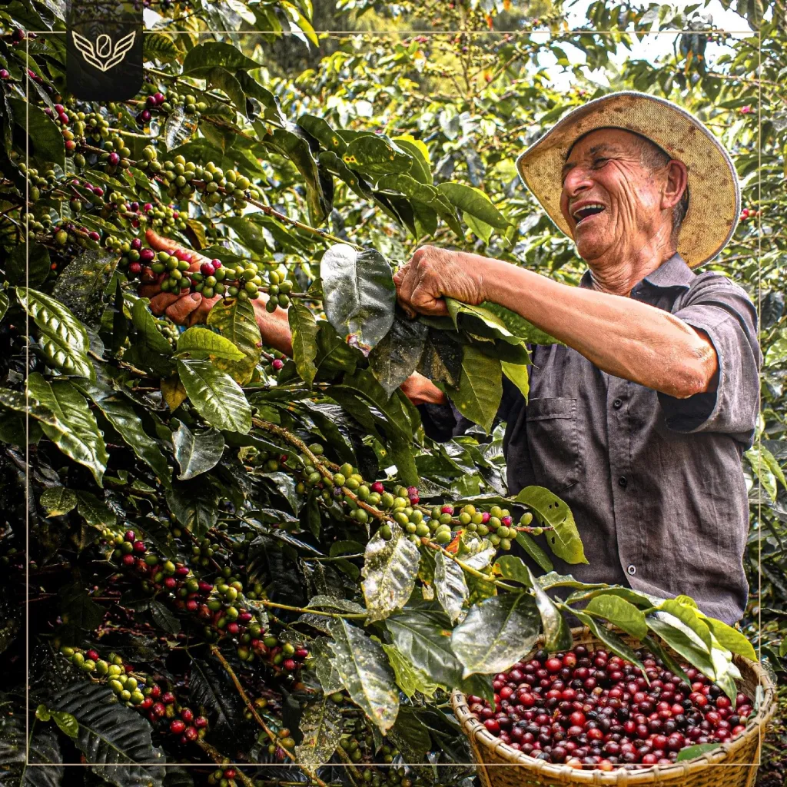

Don José y su cultivo de café

Don José es un agricultor que ha dedicado gran parte de su vida al cultivo del café. Gracias a su esfuerzo y dedicación, ha logrado producir café de alta calidad que beneficia a su comunidad. Su historia representa el trabajo constante y el amor por la tierra.
María y el cultivo de plátano

María trabaja junto a su familia en el cultivo de plátano. Su dedicación ha permitido mejorar la calidad de sus productos y generar ingresos sostenibles. Su historia demuestra la importancia del trabajo en equipo en el campo.